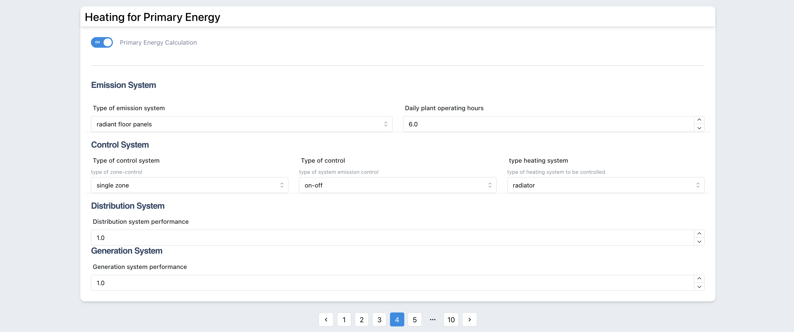

Chapter 3 Building
Figure 3.1: User Buildings
In the building page the user can visualize and mange all its buildings.
3.1 Add new building
In order to create a new building the following information is required from the user:
- Building Name: name of the building
- Building Year: year of construction
- Building Typology: list of possible building typology (i.e. “school”, “residential”, “office”, etc.)
- Project Name: Name of the project to which the buildings belongs to.
- Simulation Name: the building can be simulated several times, if you want to save the different simulations you need to identify it during the creation of the building
The user should place the building in the map. This step is important to connect the tool to the weather data (connection to PVGIS site https://re.jrc.ec.europa.eu/pvg_tools/en/ )
If the building is not placed in the map an error will come up.Figure 3.2: Error if building is not placed in a map during the creation
3.2 Buildings List
In a specific page it is possible to visualize the list of buildings as cards, selecting one the Audit inputs is opened.
Figure 3.3: List of buildings
3.3 Audit page
In the audit page the user should provide inputs related to building and systems according to the ISO 52016. Th following 9 cards should be filled:
3.3.1 General
In the general page a summary of the inputs provided during the creation of the building is shown.
Figure 3.4: Audit - General Page
3.3.2 Geometry
the following information should be provided: - Perimeter of the building [m]: it is the length, the linear measurement around an entire building in meter. - Slab-on-ground area: area of the building in contact to the ground in m2 - Wall thickness: Average thickness of the external walls in meter - Useful building area: total area of all enclosed spaces measured to the internal face of the external walls in in m2 - Building Volume: Volume of the building in in m3 - height: external height of the building in meter
Figure 3.5: Geometry Page
3.3.3 Envelope
In this tab all the information related to the properties of the Envelope should be provided.
- Opaque Vertical Components: For each building exposure it is necessary to select all type of opaque vertical component.
The component is taken from a specific database provided by the tool and can be augmented with user-defined components.
Access to the database can be done directly through the button below : “DB Wall Components” or through the user drop-down menu in the user section at the top of the header: Components -> Walls
Figure 3.6: Opaque Vertical Components Page
- Transparent Vertical Components: For each building exposure it is necessary to select all type of transparent vertical component.
The component is taken from a specific database provided by the tool and can be augmented with user-defined components.
Access to the database can be done directly through the button below : “DB Window Components” or through the user drop-down menu in the user section at the top of the header: Components -> Windows
Figure 3.7: Opaque Horizontal Components Page
- Opaque Horizontal Components: For each building exposure it is necessary to select all type of opaque horizontal component.
The component is taken from a specific database provided by the tool and can be augmented with user-defined components.
Access to the database can be done directly through the button below : “DB Floors/Roof” or through the user drop-down menu in the user section at the top of the header: Components -> Roofs and Floors
3.3.4 Heating
Heating - ISO52016
In the heating system 3 main inputs are required to the user for the calculation of the energy needs:
- Power: Maximum power of the generator
- Set-point: Internal (minimum intended) operative temperature for the calculation of the energy load or need for heating (i.e 21°C)
- Set-back: Temperature that the heating system will never fall below (i.e. 10°C)

Figure 3.8: Inputs Heating ISO 52016
Heating - UNITS 11300
The tool calculates the primary energy using the simplified version of the UNI TS 11300. For this calculation the user should provide the efficiency of different subsystems characterizing the heating system (Generation, Distribution, Emission and control).Figure 3.9: Inputs Heating UNI TS 11300
3.3.5 Cooling
Cooling - ISO52016 In the cooling system 3 main inputs are required to the user for the calculation of the energy needs:
- Power: Maximum power of the cooling generator
- Set-point: Internal (maximum intended) temperature for the calculation of the energy load or need for cooling (i.e 26°C)
- Set-back: Temperature that the cooling system will never overcome (i.e.30°C)
Figure 3.10: Inputs Cooling ISO 52016